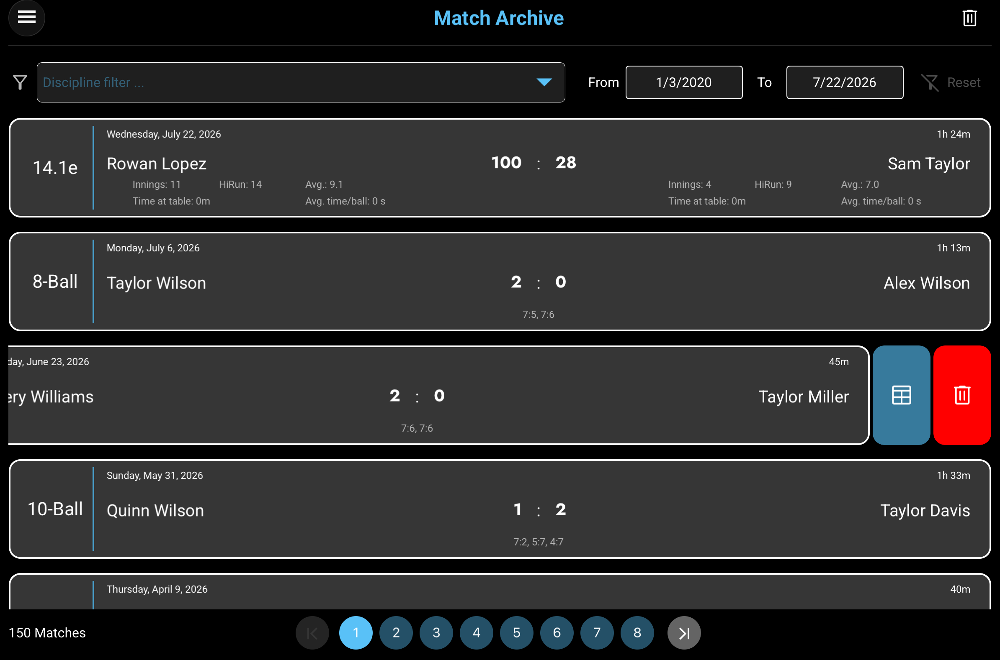

Filter by discipline
Select one or several disciplines. Only disciplines represented in the current archive are offered, and choosing several shows matches from any of those selections.
COMPLETED MATCHES
Smart-Score automatically saves every finalized match in the archive. The newest matches appear first, giving you a persistent local history of results, match times, and discipline-specific statistics.
THE ARCHIVE AT A GLANCE
Use the controls above and below the match list to narrow large archives and move between result pages. Each change is applied directly to the displayed list.

Select one or several disciplines. Only disciplines represented in the current archive are offered, and choosing several shows matches from any of those selections.
The From and To dates are inclusive and are limited to the earliest and latest archived match dates. Discipline and date filters are combined.
Tap Reset to clear every discipline selection and restore the full available date range. The control is enabled only while a filter is active.
Every card identifies the discipline, date, duration, both players, final result, and the additional statistics available for that discipline.
Swipe a match card to the left to reveal the blue Results Sheet action and the red action for deleting that individual match.
The count reflects the current filtered result. Smart-Score displays up to 20 matches per page; use the numbered and arrow buttons to move through additional pages.
The trash button in the navigation bar removes every archived match. Smart-Score asks for confirmation before clearing the archive.
MATCH INFORMATION
All cards share the same basic match information. The lower portion changes to show the statistics most useful for Straight Pool or the 8-/9-/10-Ball disciplines.
The discipline appears at the far left. The card header shows the match date and total duration, while the center shows the two player names and the final match result.
The central result is the final points score. For each player, the card also shows innings, high run, scoring average, total time at the table, and average time per ball.
The large result shows the sets won by each player. The smaller line below lists the rack score of every completed set in playing order.
REVIEW OR REMOVE
Swipe a card left until the two actions appear. These actions apply to the selected match only; the trash button in the navigation bar applies to the complete archive.
Tap the blue Results Sheet action to reopen the detailed record. Smart-Score automatically displays the inning-based Straight Pool sheet or the set-and-rack 8-/9-/10-Ball sheet.
Tap the red trash action to remove the selected match from the list and the saved archive. This individual delete action is performed immediately.